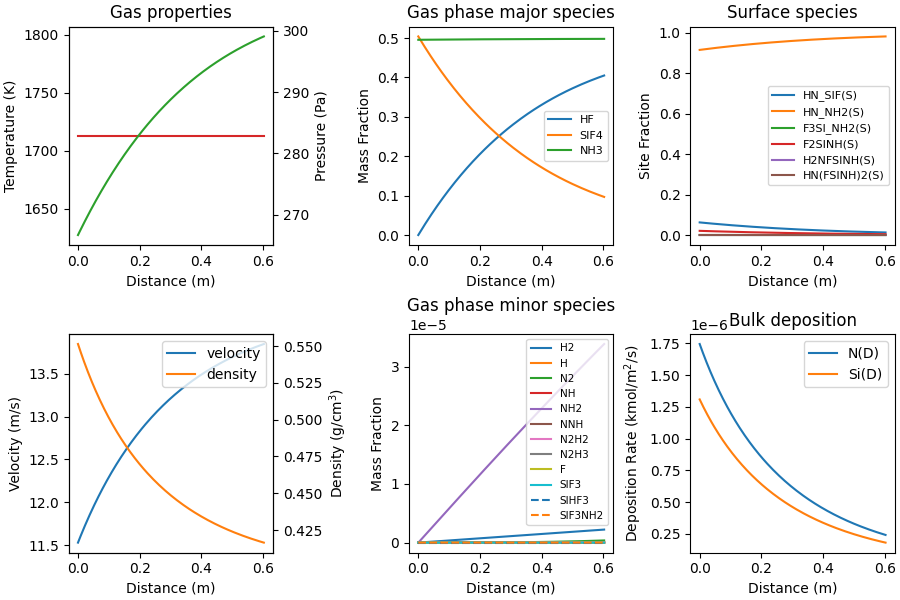

Note
Go to the end to download the full example code.
Plug flow reactor: silicon nitride deposition#
A 1-D steady state plug-flow reactor demonstrating silicon nitride (Si3N4) deposition from ammonia (NH3) and silicon tetrafluoride (SiF4).
Assumes a constant temperature, frictionless, cylindrical reactor.
Based off the Jupyter notebook created by Yuanjie Jiang, which corresponds to the original example from:
R.S. Larson. “PLUG: A FORTRAN program for the analysis of PLUG flow reactors with gas-phase and surface chemistry”, Sandia Report SAND-96-8211, 1996. https://doi.org/10.2172/204257
The results are somewhat different from those in the Larson report in part due to the fact that this example does not include the frictional pressure drop.
Requires: cantera >= 3.0, matplotlib >= 2.0
0.0 [1. 0. 0. 0. 0. 0.]
1e-14 [6.25191227e-02 9.15971219e-01 3.13969632e-04 2.08341959e-02
1.20497585e-04 2.40995170e-04]
2e-14 [6.25191227e-02 9.15971219e-01 3.13969632e-04 2.08341959e-02
1.20497585e-04 2.40995170e-04]
4e-14 [6.25191227e-02 9.15971219e-01 3.13969632e-04 2.08341959e-02
1.20497585e-04 2.40995170e-04]
8e-14 [6.25191227e-02 9.15971219e-01 3.13969632e-04 2.08341959e-02
1.20497585e-04 2.40995170e-04]
1.6e-13 [6.25191227e-02 9.15971219e-01 3.13969632e-04 2.08341959e-02
1.20497585e-04 2.40995170e-04]
3.2e-13 [6.25191227e-02 9.15971219e-01 3.13969632e-04 2.08341959e-02
1.20497585e-04 2.40995170e-04]
6.4e-13 [6.25191227e-02 9.15971219e-01 3.13969632e-04 2.08341959e-02
1.20497585e-04 2.40995170e-04]
1.28e-12 [6.25191227e-02 9.15971219e-01 3.13969632e-04 2.08341959e-02
1.20497585e-04 2.40995170e-04]
2.56e-12 [6.25191227e-02 9.15971219e-01 3.13969632e-04 2.08341959e-02
1.20497585e-04 2.40995170e-04]
5.12e-12 [6.25191227e-02 9.15971219e-01 3.13969632e-04 2.08341959e-02
1.20497585e-04 2.40995170e-04]
1.024e-11 [6.25191227e-02 9.15971219e-01 3.13969632e-04 2.08341959e-02
1.20497585e-04 2.40995170e-04]
2.048e-11 [6.25191227e-02 9.15971219e-01 3.13969632e-04 2.08341959e-02
1.20497585e-04 2.40995170e-04]
4.096e-11 [6.25191227e-02 9.15971219e-01 3.13969632e-04 2.08341959e-02
1.20497585e-04 2.40995170e-04]
8.192e-11 [6.25191227e-02 9.15971219e-01 3.13969632e-04 2.08341959e-02
1.20497585e-04 2.40995170e-04]
1.6384e-10 [6.25191227e-02 9.15971219e-01 3.13969632e-04 2.08341959e-02
1.20497585e-04 2.40995170e-04]
3.2768e-10 [6.25191227e-02 9.15971219e-01 3.13969632e-04 2.08341959e-02
1.20497585e-04 2.40995170e-04]
6.5536e-10 [6.25191227e-02 9.15971219e-01 3.13969631e-04 2.08341959e-02
1.20497585e-04 2.40995170e-04]
1.31072e-09 [6.25191226e-02 9.15971219e-01 3.13969630e-04 2.08341958e-02
1.20497585e-04 2.40995170e-04]
2.62144e-09 [6.25191224e-02 9.15971219e-01 3.13969629e-04 2.08341958e-02
1.20497585e-04 2.40995169e-04]
5.24288e-09 [6.25191220e-02 9.15971220e-01 3.13969626e-04 2.08341956e-02
1.20497584e-04 2.40995168e-04]
1.048576e-08 [6.25191212e-02 9.15971221e-01 3.13969619e-04 2.08341954e-02
1.20497583e-04 2.40995166e-04]
2.097152e-08 [6.25191196e-02 9.15971223e-01 3.13969606e-04 2.08341948e-02
1.20497581e-04 2.40995162e-04]
4.194304e-08 [6.25191165e-02 9.15971227e-01 3.13969580e-04 2.08341938e-02
1.20497577e-04 2.40995155e-04]
6.291456e-08 [6.25191134e-02 9.15971232e-01 3.13969555e-04 2.08341928e-02
1.20497573e-04 2.40995147e-04]
8.388608e-08 [6.25191102e-02 9.15971236e-01 3.13969529e-04 2.08341917e-02
1.20497569e-04 2.40995139e-04]
1.2582912e-07 [6.25191040e-02 9.15971244e-01 3.13969477e-04 2.08341896e-02
1.20497562e-04 2.40995123e-04]
1.6777216e-07 [6.25190977e-02 9.15971253e-01 3.13969425e-04 2.08341876e-02
1.20497554e-04 2.40995108e-04]
2.097152e-07 [6.25190915e-02 9.15971261e-01 3.13969374e-04 2.08341855e-02
1.20497546e-04 2.40995092e-04]
2.9360128e-07 [6.25190790e-02 9.15971278e-01 3.13969270e-04 2.08341813e-02
1.20497531e-04 2.40995061e-04]
4.6137344000000005e-07 [6.25190540e-02 9.15971311e-01 3.13969064e-04 2.08341730e-02
1.20497500e-04 2.40994999e-04]
7.9691776e-07 [6.25190040e-02 9.15971379e-01 3.13968650e-04 2.08341563e-02
1.20497437e-04 2.40994875e-04]
1.4680064e-06 [6.25189039e-02 9.15971513e-01 3.13967824e-04 2.08341230e-02
1.20497313e-04 2.40994626e-04]
2.81018368e-06 [6.25187039e-02 9.15971782e-01 3.13966171e-04 2.08340563e-02
1.20497064e-04 2.40994128e-04]
5.4945382399999995e-06 [6.25183037e-02 9.15972321e-01 3.13962865e-04 2.08339230e-02
1.20496567e-04 2.40993133e-04]
8.1788928e-06 [6.25179036e-02 9.15972859e-01 3.13959559e-04 2.08337896e-02
1.20496069e-04 2.40992138e-04]
1.086324736e-05 [6.25175035e-02 9.15973397e-01 3.13956253e-04 2.08336563e-02
1.20495571e-04 2.40991143e-04]
1.354760192e-05 [6.25171033e-02 9.15973936e-01 3.13952947e-04 2.08335229e-02
1.20495074e-04 2.40990148e-04]
1.891631104e-05 [6.25163031e-02 9.15975012e-01 3.13946335e-04 2.08332563e-02
1.20494079e-04 2.40988157e-04]
2.428502016e-05 [6.25155029e-02 9.15976089e-01 3.13939724e-04 2.08329896e-02
1.20493084e-04 2.40986167e-04]
2.965372928e-05 [6.25147026e-02 9.15977165e-01 3.13933112e-04 2.08327229e-02
1.20492089e-04 2.40984177e-04]
3.50224384e-05 [6.25139024e-02 9.15978242e-01 3.13926501e-04 2.08324562e-02
1.20491094e-04 2.40982187e-04]
4.5759856640000004e-05 [6.25123020e-02 9.15980394e-01 3.13913279e-04 2.08319229e-02
1.20489104e-04 2.40978207e-04]
5.465637762966823e-05 [6.25109760e-02 9.15982178e-01 3.13902325e-04 2.08314810e-02
1.20487455e-04 2.40974910e-04]
6.355289861933646e-05 [6.25096500e-02 9.15983962e-01 3.13891371e-04 2.08310392e-02
1.20485806e-04 2.40971613e-04]
7.244941960900468e-05 [6.25083241e-02 9.15985746e-01 3.13880417e-04 2.08305973e-02
1.20484158e-04 2.40968316e-04]
8.134594059867291e-05 [6.25069982e-02 9.15987529e-01 3.13869464e-04 2.08301554e-02
1.20482509e-04 2.40965019e-04]
9.024246158834114e-05 [6.25056723e-02 9.15989313e-01 3.13858512e-04 2.08297136e-02
1.20480861e-04 2.40961722e-04]
0.0001080355035676776 [6.25030205e-02 9.15992880e-01 3.13836609e-04 2.08288299e-02
1.20477565e-04 2.40955129e-04]
0.00012582854554701406 [6.25003689e-02 9.15996447e-01 3.13814708e-04 2.08279463e-02
1.20474268e-04 2.40948537e-04]
0.00014362158752635051 [6.24977174e-02 9.16000014e-01 3.13792809e-04 2.08270627e-02
1.20470973e-04 2.40941945e-04]
0.00016141462950568697 [6.24950659e-02 9.16003581e-01 3.13770911e-04 2.08261791e-02
1.20467677e-04 2.40935354e-04]
0.00017920767148502342 [6.24924146e-02 9.16007148e-01 3.13749016e-04 2.08252955e-02
1.20464382e-04 2.40928764e-04]
0.00019700071346435988 [6.24897633e-02 9.16010714e-01 3.13727123e-04 2.08244120e-02
1.20461087e-04 2.40922174e-04]
0.00023258679742303278 [6.24844611e-02 9.16017847e-01 3.13683343e-04 2.08226451e-02
1.20454498e-04 2.40908996e-04]
0.00025757629800287604 [6.24807380e-02 9.16022855e-01 3.13652605e-04 2.08214044e-02
1.20449872e-04 2.40899744e-04]
0.0002825657985827193 [6.24770151e-02 9.16027864e-01 3.13621870e-04 2.08201637e-02
1.20445247e-04 2.40890493e-04]
0.00030755529916256255 [6.24732923e-02 9.16032872e-01 3.13591140e-04 2.08189231e-02
1.20440622e-04 2.40881244e-04]
0.0003325447997424058 [6.24695698e-02 9.16037879e-01 3.13560413e-04 2.08176826e-02
1.20435998e-04 2.40871995e-04]
0.00035753430032224907 [6.24658474e-02 9.16042887e-01 3.13529691e-04 2.08164421e-02
1.20431374e-04 2.40862748e-04]
0.0003825238009020923 [6.24621252e-02 9.16047894e-01 3.13498973e-04 2.08152017e-02
1.20426751e-04 2.40853503e-04]
0.0004075133014819356 [6.24584032e-02 9.16052901e-01 3.13468258e-04 2.08139614e-02
1.20422129e-04 2.40844258e-04]
0.00043250280206177884 [6.24546814e-02 9.16057907e-01 3.13437548e-04 2.08127211e-02
1.20417507e-04 2.40835015e-04]
0.0004574923026416221 [6.24509598e-02 9.16062914e-01 3.13406841e-04 2.08114809e-02
1.20412886e-04 2.40825773e-04]
0.00048248180322146535 [6.24472384e-02 9.16067920e-01 3.13376139e-04 2.08102408e-02
1.20408266e-04 2.40816532e-04]
0.0005074713038013086 [6.24435171e-02 9.16072926e-01 3.13345441e-04 2.08090007e-02
1.20403646e-04 2.40807292e-04]
0.0005324608043811518 [6.24397961e-02 9.16077931e-01 3.13314747e-04 2.08077607e-02
1.20399027e-04 2.40798054e-04]
0.000557450304960995 [6.24360752e-02 9.16082937e-01 3.13284056e-04 2.08065207e-02
1.20394409e-04 2.40788817e-04]
0.0005824398055408382 [6.24323545e-02 9.16087942e-01 3.13253370e-04 2.08052808e-02
1.20389791e-04 2.40779581e-04]
0.0006074293061206814 [6.24286340e-02 9.16092947e-01 3.13222688e-04 2.08040410e-02
1.20385173e-04 2.40770347e-04]
0.0006324188067005246 [6.24249137e-02 9.16097951e-01 3.13192010e-04 2.08028012e-02
1.20380557e-04 2.40761114e-04]
0.0006574083072803678 [6.24211936e-02 9.16102956e-01 3.13161335e-04 2.08015615e-02
1.20375941e-04 2.40751882e-04]
0.000682397807860211 [6.24174737e-02 9.16107960e-01 3.13130665e-04 2.08003218e-02
1.20371326e-04 2.40742651e-04]
0.0007073873084400542 [6.24137539e-02 9.16112964e-01 3.13099999e-04 2.07990822e-02
1.20366711e-04 2.40733422e-04]
0.0007323768090198974 [6.24100344e-02 9.16117967e-01 3.13069337e-04 2.07978427e-02
1.20362097e-04 2.40724194e-04]
0.0007573663095997406 [6.24063150e-02 9.16122971e-01 3.13038679e-04 2.07966033e-02
1.20357483e-04 2.40714967e-04]
0.0007823558101795838 [6.24025958e-02 9.16127974e-01 3.13008025e-04 2.07953638e-02
1.20352871e-04 2.40705741e-04]
0.000807345310759427 [6.23988768e-02 9.16132977e-01 3.12977374e-04 2.07941245e-02
1.20348258e-04 2.40696517e-04]
0.0008323348113392702 [6.23951580e-02 9.16137979e-01 3.12946728e-04 2.07928852e-02
1.20343647e-04 2.40687294e-04]
0.0008573243119191134 [6.23914393e-02 9.16142981e-01 3.12916086e-04 2.07916460e-02
1.20339036e-04 2.40678072e-04]
0.0008823138124989566 [6.23877209e-02 9.16147984e-01 3.12885448e-04 2.07904069e-02
1.20334426e-04 2.40668852e-04]
0.0009073033130787998 [6.23840027e-02 9.16152985e-01 3.12854814e-04 2.07891678e-02
1.20329816e-04 2.40659632e-04]
0.000932292813658643 [6.23802846e-02 9.16157987e-01 3.12824184e-04 2.07879287e-02
1.20325207e-04 2.40650414e-04]
0.0009572823142384862 [6.23765667e-02 9.16162988e-01 3.12793558e-04 2.07866898e-02
1.20320599e-04 2.40641198e-04]
0.0009822718148183294 [6.23728490e-02 9.16167989e-01 3.12762936e-04 2.07854509e-02
1.20315991e-04 2.40631982e-04]
0.0010072613153981726 [6.23691315e-02 9.16172990e-01 3.12732318e-04 2.07842120e-02
1.20311384e-04 2.40622768e-04]
0.0010322508159780158 [6.23654141e-02 9.16177991e-01 3.12701704e-04 2.07829732e-02
1.20306778e-04 2.40613555e-04]
0.001057240316557859 [6.23616970e-02 9.16182991e-01 3.12671094e-04 2.07817345e-02
1.20302172e-04 2.40604343e-04]
0.0010822298171377022 [6.23579801e-02 9.16187991e-01 3.12640488e-04 2.07804959e-02
1.20297566e-04 2.40595133e-04]
0.0011072193177175454 [6.23542633e-02 9.16192991e-01 3.12609886e-04 2.07792573e-02
1.20292962e-04 2.40585924e-04]
0.0011322088182973886 [6.23505467e-02 9.16197990e-01 3.12579287e-04 2.07780187e-02
1.20288358e-04 2.40576716e-04]
0.0011571983188772318 [6.23468304e-02 9.16202989e-01 3.12548694e-04 2.07767803e-02
1.20283755e-04 2.40567509e-04]
0.001182187819457075 [6.23431141e-02 9.16207988e-01 3.12518103e-04 2.07755419e-02
1.20279152e-04 2.40558304e-04]
0.0012071773200369182 [6.23393981e-02 9.16212987e-01 3.12487517e-04 2.07743035e-02
1.20274550e-04 2.40549100e-04]
0.0012296678705587772 [6.23360539e-02 9.16217486e-01 3.12459993e-04 2.07731891e-02
1.20270409e-04 2.40540817e-04]
0.0012521584210806362 [6.23327098e-02 9.16221984e-01 3.12432473e-04 2.07720747e-02
1.20266268e-04 2.40532536e-04]
0.0012746489716024953 [6.23293657e-02 9.16226483e-01 3.12404955e-04 2.07709603e-02
1.20262128e-04 2.40524255e-04]
0.0012971395221243543 [6.23260220e-02 9.16230981e-01 3.12377441e-04 2.07698460e-02
1.20257988e-04 2.40515976e-04]
0.0013196300726462133 [6.23226783e-02 9.16235478e-01 3.12349930e-04 2.07687317e-02
1.20253848e-04 2.40507697e-04]
0.0013398715681158862 [6.23196691e-02 9.16239526e-01 3.12325172e-04 2.07677289e-02
1.20250124e-04 2.40500247e-04]
0.0013601130635855592 [6.23166601e-02 9.16243574e-01 3.12300418e-04 2.07667262e-02
1.20246399e-04 2.40492798e-04]
0.001380354559055232 [6.23136512e-02 9.16247622e-01 3.12275666e-04 2.07657235e-02
1.20242675e-04 2.40485350e-04]
0.001400596054524905 [6.23106424e-02 9.16251669e-01 3.12250917e-04 2.07647208e-02
1.20238951e-04 2.40477903e-04]
0.001420837549994578 [6.23076337e-02 9.16255716e-01 3.12226170e-04 2.07637182e-02
1.20235228e-04 2.40470456e-04]
0.001441079045464251 [6.23046252e-02 9.16259763e-01 3.12201426e-04 2.07627156e-02
1.20231505e-04 2.40463011e-04]
0.001481562036403597 [6.22986084e-02 9.16267857e-01 3.12151945e-04 2.07607106e-02
1.20224061e-04 2.40448122e-04]
0.001522045027342943 [6.22925921e-02 9.16275950e-01 3.12102476e-04 2.07587057e-02
1.20216618e-04 2.40433236e-04]
0.0015625280182822892 [6.22865764e-02 9.16284042e-01 3.12053016e-04 2.07567009e-02
1.20209177e-04 2.40418354e-04]
0.0016030110092216353 [6.22805611e-02 9.16292134e-01 3.12003567e-04 2.07546964e-02
1.20201738e-04 2.40403475e-04]
0.0016434940001609814 [6.22745463e-02 9.16300225e-01 3.11954129e-04 2.07526920e-02
1.20194300e-04 2.40388600e-04]
0.0016839769911003275 [6.22685320e-02 9.16308315e-01 3.11904701e-04 2.07506877e-02
1.20186864e-04 2.40373728e-04]
0.0017244599820396736 [6.22625182e-02 9.16316405e-01 3.11855283e-04 2.07486836e-02
1.20179429e-04 2.40358859e-04]
0.0017649429729790196 [6.22565048e-02 9.16324494e-01 3.11805876e-04 2.07466797e-02
1.20171996e-04 2.40343993e-04]
0.0018054259639183657 [6.22504920e-02 9.16332582e-01 3.11756480e-04 2.07446760e-02
1.20164565e-04 2.40329131e-04]
0.0018459089548577118 [6.22444796e-02 9.16340670e-01 3.11707093e-04 2.07426724e-02
1.20157136e-04 2.40314272e-04]
0.001926874936736404 [6.22324563e-02 9.16356843e-01 3.11608352e-04 2.07386657e-02
1.20142282e-04 2.40284563e-04]
0.002007840918615096 [6.22204350e-02 9.16373013e-01 3.11509653e-04 2.07346596e-02
1.20127434e-04 2.40254868e-04]
0.0020888069004937884 [6.22084156e-02 9.16389181e-01 3.11410995e-04 2.07306542e-02
1.20112593e-04 2.40225187e-04]
0.0021697728823724806 [6.21963982e-02 9.16405347e-01 3.11312379e-04 2.07266495e-02
1.20097759e-04 2.40195518e-04]
0.0022507388642511728 [6.21843827e-02 9.16421509e-01 3.11213805e-04 2.07226454e-02
1.20082931e-04 2.40165863e-04]
0.002331704846129865 [6.21723692e-02 9.16437669e-01 3.11115273e-04 2.07186419e-02
1.20068110e-04 2.40136220e-04]
0.002412670828008557 [6.21603576e-02 9.16453827e-01 3.11016782e-04 2.07146391e-02
1.20053296e-04 2.40106591e-04]
0.0024936368098872493 [6.21483479e-02 9.16469981e-01 3.10918332e-04 2.07106370e-02
1.20038488e-04 2.40076975e-04]
0.0025746027917659415 [6.21363402e-02 9.16486133e-01 3.10819924e-04 2.07066355e-02
1.20023686e-04 2.40047372e-04]
0.0026555687736446337 [6.21243344e-02 9.16502283e-01 3.10721558e-04 2.07026346e-02
1.20008891e-04 2.40017783e-04]
0.002736534755523326 [6.21123306e-02 9.16518429e-01 3.10623233e-04 2.06986344e-02
1.19994103e-04 2.39988206e-04]
0.002817500737402018 [6.21003287e-02 9.16534574e-01 3.10524950e-04 2.06946348e-02
1.19979321e-04 2.39958643e-04]
0.0028984667192807102 [6.20883288e-02 9.16550715e-01 3.10426708e-04 2.06906359e-02
1.19964546e-04 2.39929093e-04]
0.0029794327011594024 [6.20763308e-02 9.16566854e-01 3.10328508e-04 2.06866376e-02
1.19949778e-04 2.39899555e-04]
0.0030603986830380946 [6.20643347e-02 9.16582990e-01 3.10230349e-04 2.06826400e-02
1.19935016e-04 2.39870031e-04]
0.0031413646649167868 [6.20523406e-02 9.16599123e-01 3.10132232e-04 2.06786430e-02
1.19920260e-04 2.39840520e-04]
0.003222330646795479 [6.20403484e-02 9.16615254e-01 3.10034155e-04 2.06746467e-02
1.19905511e-04 2.39811022e-04]
0.003303296628674171 [6.20283582e-02 9.16631382e-01 3.09936121e-04 2.06706510e-02
1.19890769e-04 2.39781537e-04]
0.0033842626105528633 [6.20163699e-02 9.16647508e-01 3.09838127e-04 2.06666559e-02
1.19876033e-04 2.39752065e-04]
0.0034652285924315555 [6.20043836e-02 9.16663631e-01 3.09740175e-04 2.06626615e-02
1.19861303e-04 2.39722607e-04]
0.0035461945743102477 [6.19923992e-02 9.16679751e-01 3.09642264e-04 2.06586678e-02
1.19846580e-04 2.39693161e-04]
0.003708126538067632 [6.19684362e-02 9.16711984e-01 3.09446566e-04 2.06506822e-02
1.19817154e-04 2.39634309e-04]
0.0038700585018250164 [6.19444809e-02 9.16744206e-01 3.09251032e-04 2.06426993e-02
1.19787754e-04 2.39575508e-04]
0.004031990465582401 [6.19205334e-02 9.16776417e-01 3.09055663e-04 2.06347189e-02
1.19758380e-04 2.39516760e-04]
0.004193922429339785 [6.18965937e-02 9.16808618e-01 3.08860459e-04 2.06267411e-02
1.19729032e-04 2.39458064e-04]
0.0043558543930971695 [6.18726617e-02 9.16840808e-01 3.08665418e-04 2.06187659e-02
1.19699710e-04 2.39399419e-04]
0.004517786356854554 [6.18487375e-02 9.16872988e-01 3.08470542e-04 2.06107932e-02
1.19670413e-04 2.39340827e-04]
0.004679718320611938 [6.18248210e-02 9.16905157e-01 3.08275829e-04 2.06028232e-02
1.19641143e-04 2.39282286e-04]
0.004841650284369323 [6.18009122e-02 9.16937315e-01 3.08081280e-04 2.05948557e-02
1.19611898e-04 2.39223797e-04]
0.005003582248126707 [6.17770112e-02 9.16969463e-01 3.07886894e-04 2.05868908e-02
1.19582680e-04 2.39165359e-04]
0.005165514211884091 [6.17531180e-02 9.17001600e-01 3.07692672e-04 2.05789285e-02
1.19553487e-04 2.39106974e-04]
0.005327446175641476 [6.17292324e-02 9.17033727e-01 3.07498612e-04 2.05709688e-02
1.19524320e-04 2.39048639e-04]
0.0056513101031562445 [6.16814846e-02 9.17097949e-01 3.07110981e-04 2.05550570e-02
1.19466062e-04 2.38932125e-04]
0.005942787637919536 [6.16385380e-02 9.17155713e-01 3.06762668e-04 2.05407453e-02
1.19413718e-04 2.38827437e-04]
0.006234265172682828 [6.15956164e-02 9.17213442e-01 3.06414880e-04 2.05264419e-02
1.19361458e-04 2.38722915e-04]
0.00652574270744612 [6.15527199e-02 9.17271138e-01 3.06067616e-04 2.05121468e-02
1.19309279e-04 2.38618559e-04]
0.006817220242209412 [6.15098483e-02 9.17328799e-01 3.05720874e-04 2.04978601e-02
1.19257184e-04 2.38514368e-04]
0.007108697776972704 [6.14670018e-02 9.17386426e-01 3.05374654e-04 2.04835817e-02
1.19205171e-04 2.38410341e-04]
0.007400175311735996 [6.14241803e-02 9.17444019e-01 3.05028954e-04 2.04693116e-02
1.19153240e-04 2.38306479e-04]
0.007983130381262579 [6.13386121e-02 9.17559103e-01 3.04339111e-04 2.04407964e-02
1.19049623e-04 2.38099247e-04]
0.00868686349422413 [6.12354487e-02 9.17697850e-01 3.03509099e-04 2.04064177e-02
1.18924975e-04 2.37849950e-04]
0.009390596607185681 [6.11324306e-02 9.17836398e-01 3.02682084e-04 2.03720874e-02
1.18800800e-04 2.37601599e-04]
0.010094329720147233 [6.10295575e-02 9.17974748e-01 3.01858051e-04 2.03378055e-02
1.18677095e-04 2.37354190e-04]
0.010798062833108784 [6.09268295e-02 9.18112900e-01 3.01036985e-04 2.03035718e-02
1.18553859e-04 2.37107718e-04]
0.012205529059031888 [6.07218074e-02 9.18388613e-01 2.99403690e-04 2.02352492e-02
1.18308782e-04 2.36617564e-04]
0.013472248662362681 [6.05377816e-02 9.18636082e-01 2.97943717e-04 2.01739235e-02
1.18089790e-04 2.36179580e-04]
0.014738968265693476 [6.03542228e-02 9.18882914e-01 2.96493119e-04 2.01127534e-02
1.17872277e-04 2.35744553e-04]
0.01600568786902427 [6.01711299e-02 9.19129111e-01 2.95051809e-04 2.00517386e-02
1.17656229e-04 2.35312457e-04]
0.017272407472355065 [5.99885021e-02 9.19374675e-01 2.93619702e-04 1.99908788e-02
1.17441632e-04 2.34883264e-04]
0.01980584667901665 [5.96246377e-02 9.19863907e-01 2.90782762e-04 1.98696227e-02
1.17016739e-04 2.34033477e-04]
0.02233928588567824 [5.92626220e-02 9.20350621e-01 2.87981635e-04 1.97489827e-02
1.16597489e-04 2.33194979e-04]
0.02487272509233983 [5.89024474e-02 9.20834829e-01 2.85215676e-04 1.96289563e-02
1.16183779e-04 2.32367559e-04]
0.027406164299001418 [5.85441063e-02 9.21316542e-01 2.82484257e-04 1.95095409e-02
1.15775508e-04 2.31551015e-04]
0.029939603505663007 [5.81875915e-02 9.21795770e-01 2.79786764e-04 1.93907340e-02
1.15372575e-04 2.30745149e-04]
0.032473042712324596 [5.78328955e-02 9.22272524e-01 2.77122598e-04 1.92725333e-02
1.14974883e-04 2.29949767e-04]
0.035006481918986185 [5.74800111e-02 9.22746814e-01 2.74491175e-04 1.91549363e-02
1.14582340e-04 2.29164680e-04]
0.037539921125647774 [5.71289312e-02 9.23218652e-01 2.71891927e-04 1.90379406e-02
1.14194852e-04 2.28389704e-04]
0.04007336033230936 [5.67796485e-02 9.23688046e-01 2.69324298e-04 1.89215438e-02
1.13812330e-04 2.27624660e-04]
0.04260679953897095 [5.64321560e-02 9.24155009e-01 2.66787744e-04 1.88057436e-02
1.13434686e-04 2.26869372e-04]
0.04514023874563254 [5.60864468e-02 9.24619548e-01 2.64281737e-04 1.86905377e-02
1.13061835e-04 2.26123670e-04]
0.04767367795229413 [5.57425139e-02 9.25081676e-01 2.61805759e-04 1.85759237e-02
1.12693693e-04 2.25387385e-04]
0.05274055636561731 [5.50599493e-02 9.25998733e-01 2.56941885e-04 1.83484624e-02
1.11971211e-04 2.23942422e-04]
0.057300746937608164 [5.44516476e-02 9.26815933e-01 2.52662155e-04 1.81457487e-02
1.11336285e-04 2.22672569e-04]
0.06186093750959902 [5.38489954e-02 9.27625468e-01 2.48472213e-04 1.79449178e-02
1.10715403e-04 2.21430807e-04]
0.06642112808158988 [5.32519541e-02 9.28427395e-01 2.44369451e-04 1.77459567e-02
1.10108146e-04 2.20216293e-04]
0.07098131865358075 [5.26604854e-02 9.29221768e-01 2.40351363e-04 1.75488526e-02
1.09514109e-04 2.19028219e-04]
0.07554150922557161 [5.20745515e-02 9.30008641e-01 2.36415543e-04 1.73535929e-02
1.08932905e-04 2.17865809e-04]
0.08010169979756247 [5.14941150e-02 9.30788068e-01 2.32559679e-04 1.71601653e-02
1.08364159e-04 2.16728319e-04]
0.08466189036955334 [5.09191386e-02 9.31560100e-01 2.28781550e-04 1.69685572e-02
1.07807515e-04 2.15615030e-04]
0.0892220809415442 [5.03495857e-02 9.32324791e-01 2.25079017e-04 1.67787564e-02
1.07262628e-04 2.14525255e-04]
0.09378227151353506 [4.97854198e-02 9.33082192e-01 2.21450025e-04 1.65907508e-02
1.06729166e-04 2.13458332e-04]
0.09834246208552593 [4.92266045e-02 9.33832354e-01 2.17892593e-04 1.64045284e-02
1.06206811e-04 2.12413621e-04]
0.10198906829916572 [4.87835679e-02 9.34427055e-01 2.15098063e-04 1.62568885e-02
1.05796889e-04 2.11593778e-04]
0.10563567451280552 [4.83439115e-02 9.35017185e-01 2.12347129e-04 1.61103752e-02
1.05393722e-04 2.10787444e-04]
0.10891762010508134 [4.79510959e-02 9.35544415e-01 2.09907807e-04 1.59794713e-02
1.05036525e-04 2.10073049e-04]
0.11219956569735716 [4.75609904e-02 9.36067983e-01 2.07502408e-04 1.58494705e-02
1.04684575e-04 2.09369149e-04]
0.11548151128963298 [4.71735819e-02 9.36587906e-01 2.05130298e-04 1.57203685e-02
1.04337770e-04 2.08675541e-04]
0.11843526232268121 [4.68272093e-02 9.37052736e-01 2.03023354e-04 1.56049415e-02
1.04029964e-04 2.08059928e-04]
0.12138901335572945 [4.64830012e-02 9.37514642e-01 2.00942437e-04 1.54902358e-02
1.03726175e-04 2.07452350e-04]
0.12434276438877769 [4.61409480e-02 9.37973638e-01 1.98887119e-04 1.53762482e-02
1.03426335e-04 2.06852669e-04]
0.1270011403185211 [4.58349348e-02 9.38384256e-01 1.97058875e-04 1.52742708e-02
1.03159799e-04 2.06319597e-04]
0.12965951624826452 [4.55306525e-02 9.38792537e-01 1.95250728e-04 1.51728702e-02
1.02896359e-04 2.05792718e-04]
0.13231789217800793 [4.52280944e-02 9.39198491e-01 1.93462386e-04 1.50720442e-02
1.02635968e-04 2.05271935e-04]
0.13497626810775135 [4.49272536e-02 9.39602127e-01 1.91693561e-04 1.49717904e-02
1.02378580e-04 2.04757159e-04]
0.13763464403749476 [4.46281231e-02 9.40003454e-01 1.89943974e-04 1.48721066e-02
1.02124149e-04 2.04248299e-04]
0.14029301996723817 [4.43306964e-02 9.40402482e-01 1.88213348e-04 1.47729906e-02
1.01872633e-04 2.03745266e-04]
0.14295139589698158 [4.40349664e-02 9.40799220e-01 1.86501412e-04 1.46744400e-02
1.01623987e-04 2.03247973e-04]
0.145609771826725 [4.37409265e-02 9.41193678e-01 1.84807903e-04 1.45764526e-02
1.01378168e-04 2.02756336e-04]
0.1482681477564684 [4.34485699e-02 9.41585866e-01 1.83132559e-04 1.44790262e-02
1.01135136e-04 2.02270272e-04]
0.15092652368621182 [4.31578898e-02 9.41975792e-01 1.81475127e-04 1.43821585e-02
1.00894849e-04 2.01789699e-04]
0.1533190620229809 [4.28977055e-02 9.42324800e-01 1.79998545e-04 1.42954533e-02
1.00680905e-04 2.01361811e-04]
0.15547234652607306 [4.26646920e-02 9.42637353e-01 1.78681705e-04 1.42178027e-02
1.00490206e-04 2.00980412e-04]
0.15742025613476365 [4.24548401e-02 9.42918832e-01 1.77500212e-04 1.41478706e-02
1.00319187e-04 2.00638374e-04]
0.15936816574345425 [4.22458759e-02 9.43199113e-01 1.76327884e-04 1.40782342e-02
1.00149570e-04 2.00299140e-04]
0.16131607535214484 [4.20377968e-02 9.43478202e-01 1.75164629e-04 1.40088929e-02
9.99813396e-05 1.99962679e-04]
0.16326398496083544 [4.18306001e-02 9.43756101e-01 1.74010355e-04 1.39398456e-02
9.98144820e-05 1.99628964e-04]
0.16521189456952604 [4.16242831e-02 9.44032814e-01 1.72864974e-04 1.38710914e-02
9.96489823e-05 1.99297965e-04]
0.16715980417821663 [4.14188433e-02 9.44308344e-01 1.71728396e-04 1.38026296e-02
9.94848266e-05 1.98969653e-04]
0.16910771378690723 [4.12142780e-02 9.44582696e-01 1.70600533e-04 1.37344592e-02
9.93220011e-05 1.98644002e-04]
0.17105562339559782 [4.10105846e-02 9.44855873e-01 1.69481301e-04 1.36665794e-02
9.91604915e-05 1.98320983e-04]
0.17300353300428842 [4.08077604e-02 9.45127879e-01 1.68370613e-04 1.35989892e-02
9.90002846e-05 1.98000569e-04]
0.174951442612979 [4.06058029e-02 9.45398717e-01 1.67268385e-04 1.35316878e-02
9.88413671e-05 1.97682734e-04]
0.1768993522216696 [4.04047094e-02 9.45668391e-01 1.66174536e-04 1.34646744e-02
9.86837255e-05 1.97367451e-04]
0.1788472618303602 [4.02044773e-02 9.45936904e-01 1.65088982e-04 1.33979480e-02
9.85273467e-05 1.97054693e-04]
0.18060038047818175 [4.00250027e-02 9.46177576e-01 1.64119011e-04 1.33381390e-02
9.83876752e-05 1.96775350e-04]
0.1823534991260033 [3.98462218e-02 9.46417314e-01 1.63155636e-04 1.32785611e-02
9.82490070e-05 1.96498014e-04]
0.18410661777382484 [3.96681328e-02 9.46656121e-01 1.62198800e-04 1.32192138e-02
9.81113327e-05 1.96222665e-04]
0.18585973642164638 [3.94907336e-02 9.46893998e-01 1.61248446e-04 1.31600964e-02
9.79746437e-05 1.95949287e-04]
0.18761285506946793 [3.93140224e-02 9.47130948e-01 1.60304518e-04 1.31012082e-02
9.78389310e-05 1.95677862e-04]
0.18919066185250732 [3.91555691e-02 9.47343413e-01 1.59460433e-04 1.30484044e-02
9.77176168e-05 1.95435234e-04]
0.19076846863554672 [3.89976700e-02 9.47555132e-01 1.58621467e-04 1.29957853e-02
9.75970799e-05 1.95194160e-04]
0.19234627541858612 [3.88403240e-02 9.47766106e-01 1.57787583e-04 1.29433505e-02
9.74773139e-05 1.94954628e-04]
0.19392408220162552 [3.86835295e-02 9.47976337e-01 1.56958741e-04 1.28910995e-02
9.73583126e-05 1.94716625e-04]
0.19550188898466492 [3.85272852e-02 9.48185828e-01 1.56134902e-04 1.28390318e-02
9.72400698e-05 1.94480140e-04]
0.19707969576770432 [3.83715898e-02 9.48394579e-01 1.55316028e-04 1.27871471e-02
9.71225795e-05 1.94245159e-04]
0.19865750255074371 [3.82164418e-02 9.48602594e-01 1.54502081e-04 1.27354448e-02
9.70058356e-05 1.94011671e-04]
0.2002353093337831 [3.80618399e-02 9.48809873e-01 1.53693023e-04 1.26839244e-02
9.68898322e-05 1.93779664e-04]
0.2033909228998619 [3.77542687e-02 9.49222234e-01 1.52089429e-04 1.25814278e-02
9.66600231e-05 1.93320046e-04]
0.2065465364659407 [3.74488653e-02 9.49631677e-01 1.50504952e-04 1.24796536e-02
9.64331057e-05 1.92866211e-04]
0.2097021500320195 [3.71456186e-02 9.50038217e-01 1.48939307e-04 1.23785981e-02
9.62090346e-05 1.92418069e-04]
0.2128577635980983 [3.68445177e-02 9.50441869e-01 1.47392212e-04 1.22782577e-02
9.59877650e-05 1.91975530e-04]
0.2160133771641771 [3.65455515e-02 9.50842649e-01 1.45863391e-04 1.21786286e-02
9.57692533e-05 1.91538507e-04]
0.2191689907302559 [3.62487091e-02 9.51240571e-01 1.44352576e-04 1.20797073e-02
9.55534568e-05 1.91106914e-04]
0.22548021786241346 [3.56613519e-02 9.52027901e-01 1.41383909e-04 1.18839734e-02
9.51298420e-05 1.90259684e-04]
0.23179144499457102 [3.50823585e-02 9.52803981e-01 1.38484156e-04 1.16910266e-02
9.47165951e-05 1.89433190e-04]
0.2381026721267286 [3.45116417e-02 9.53568929e-01 1.35651340e-04 1.15008380e-02
9.43134032e-05 1.88626806e-04]
0.24441389925888615 [3.39491143e-02 9.54322864e-01 1.32883560e-04 1.13133785e-02
9.39199657e-05 1.87839931e-04]
0.2507251263910437 [3.33946896e-02 9.55065904e-01 1.30178987e-04 1.11286191e-02
9.35359934e-05 1.87071987e-04]
0.2570363535232013 [3.28482807e-02 9.55798169e-01 1.27535858e-04 1.09465310e-02
9.31612082e-05 1.86322416e-04]
0.2633475806553589 [3.23098012e-02 9.56519775e-01 1.24952473e-04 1.07670853e-02
9.27953423e-05 1.85590685e-04]
0.2696588077875165 [3.17791649e-02 9.57230840e-01 1.22427198e-04 1.05902533e-02
9.24381382e-05 1.84876276e-04]
0.2759700349196741 [3.12562857e-02 9.57931481e-01 1.19958452e-04 1.04160064e-02
9.20893475e-05 1.84178695e-04]
0.2822812620518317 [3.07410780e-02 9.58621815e-01 1.17544713e-04 1.02443159e-02
9.17487311e-05 1.83497462e-04]
0.2885924891839893 [3.02334562e-02 9.59301958e-01 1.15184511e-04 1.00751533e-02
9.14160584e-05 1.82832117e-04]
0.29490371631614687 [2.97333350e-02 9.59972025e-01 1.12876428e-04 9.90849037e-03
9.10911071e-05 1.82182214e-04]
0.30121494344830446 [2.92406295e-02 9.60632132e-01 1.10619093e-04 9.74429863e-03
9.07736628e-05 1.81547326e-04]
0.30752617058046205 [2.87552549e-02 9.61282393e-01 1.08411181e-04 9.58254992e-03
9.04635183e-05 1.80927037e-04]
0.31383739771261965 [2.82771270e-02 9.61922924e-01 1.06251414e-04 9.42321609e-03
9.01604739e-05 1.80320948e-04]
0.32014862484477724 [2.78061616e-02 9.62553838e-01 1.04138553e-04 9.26626915e-03
8.98643371e-05 1.79728674e-04]
0.32645985197693483 [2.73422750e-02 9.63175248e-01 1.02071401e-04 9.11168118e-03
8.95749218e-05 1.79149844e-04]
0.3321399563958766 [2.69307605e-02 9.63726484e-01 1.00249088e-04 8.97454596e-03
8.93200444e-05 1.78640089e-04]
0.332155557438003 [2.69296380e-02 9.63727988e-01 1.00244132e-04 8.97417189e-03
8.93193515e-05 1.78638703e-04]
0.3321711584801294 [2.69285156e-02 9.63729491e-01 1.00239176e-04 8.97379784e-03
8.93186587e-05 1.78637317e-04]
0.3321867595222558 [2.69273932e-02 9.63730995e-01 1.00234221e-04 8.97342380e-03
8.93179659e-05 1.78635932e-04]
0.3322179616065085 [2.69251484e-02 9.63734002e-01 1.00224310e-04 8.97267576e-03
8.93165805e-05 1.78633161e-04]
0.33224916369076124 [2.69229039e-02 9.63737008e-01 1.00214401e-04 8.97192776e-03
8.93151952e-05 1.78630390e-04]
0.33228036577501396 [2.69206594e-02 9.63740015e-01 1.00204492e-04 8.97117982e-03
8.93138100e-05 1.78627620e-04]
0.3323115678592667 [2.69184152e-02 9.63743021e-01 1.00194585e-04 8.97043194e-03
8.93124250e-05 1.78624850e-04]
0.33237397202777214 [2.69139272e-02 9.63749033e-01 1.00174773e-04 8.96893634e-03
8.93096555e-05 1.78619311e-04]
0.33249878036478303 [2.69049533e-02 9.63761053e-01 1.00135162e-04 8.96594582e-03
8.93041183e-05 1.78608237e-04]
0.3326235887017939 [2.68959821e-02 9.63773070e-01 1.00095569e-04 8.96295620e-03
8.92985836e-05 1.78597167e-04]
0.3328732053758157 [2.68780477e-02 9.63797094e-01 1.00016432e-04 8.95697967e-03
8.92875217e-05 1.78575043e-04]
0.3331228220498375 [2.68601242e-02 9.63821102e-01 9.99373639e-05 8.95100674e-03
8.92764697e-05 1.78552939e-04]
0.3336220553978811 [2.68243095e-02 9.63869076e-01 9.97794304e-05 8.93907167e-03
8.92543956e-05 1.78508791e-04]
0.3340713654111203 [2.67921132e-02 9.63912203e-01 9.96375218e-05 8.92834242e-03
8.92345628e-05 1.78469126e-04]
0.33452067542435954 [2.67599519e-02 9.63955283e-01 9.94958321e-05 8.91762481e-03
8.92147621e-05 1.78429524e-04]
0.33496998543759876 [2.67278255e-02 9.63998316e-01 9.93543610e-05 8.90691883e-03
8.91949935e-05 1.78389987e-04]
0.335419295450838 [2.66957339e-02 9.64041303e-01 9.92131081e-05 8.89622448e-03
8.91752568e-05 1.78350514e-04]
0.33631791547731643 [2.66316554e-02 9.64127135e-01 9.89312552e-05 8.87487063e-03
8.91358791e-05 1.78271758e-04]
0.3372165355037949 [2.65677162e-02 9.64212781e-01 9.86502704e-05 8.85356318e-03
8.90966286e-05 1.78193257e-04]
0.3381151555302733 [2.65039158e-02 9.64298239e-01 9.83701505e-05 8.83230203e-03
8.90575047e-05 1.78115009e-04]
0.3390137755567518 [2.64402542e-02 9.64383512e-01 9.80908924e-05 8.81108710e-03
8.90185069e-05 1.78037014e-04]
0.3399123955832302 [2.63767311e-02 9.64468599e-01 9.78124928e-05 8.78991832e-03
8.89796349e-05 1.77959270e-04]
0.34081101560970867 [2.63133462e-02 9.64553501e-01 9.75349488e-05 8.76879561e-03
8.89408881e-05 1.77881776e-04]
0.3417096356361871 [2.62500993e-02 9.64638217e-01 9.72582573e-05 8.74771889e-03
8.89022660e-05 1.77804532e-04]
0.34260825566266556 [2.61869901e-02 9.64722748e-01 9.69824154e-05 8.72668807e-03
8.88637682e-05 1.77727536e-04]
0.343506875689144 [2.61240185e-02 9.64807095e-01 9.67074198e-05 8.70570309e-03
8.88253942e-05 1.77650788e-04]
0.34440549571562246 [2.60611842e-02 9.64891257e-01 9.64332675e-05 8.68476385e-03
8.87871435e-05 1.77574287e-04]
0.3453041157421009 [2.59984870e-02 9.64975236e-01 9.61599558e-05 8.66387029e-03
8.87490157e-05 1.77498031e-04]
0.34620273576857935 [2.59359265e-02 9.65059031e-01 9.58874814e-05 8.64302232e-03
8.87110103e-05 1.77422021e-04]
0.3471013557950578 [2.58735026e-02 9.65142642e-01 9.56158415e-05 8.62221986e-03
8.86731269e-05 1.77346254e-04]
0.34889859584801475 [2.57490636e-02 9.65309317e-01 9.50750530e-05 8.58075118e-03
8.85977240e-05 1.77195448e-04]
0.3506958359009717 [2.56251681e-02 9.65475262e-01 9.45375668e-05 8.53946360e-03
8.85228034e-05 1.77045607e-04]
0.35249307595392865 [2.55018142e-02 9.65640481e-01 9.40033594e-05 8.49835650e-03
8.84483614e-05 1.76896723e-04]
0.3542903160068856 [2.53790000e-02 9.65804975e-01 9.34724078e-05 8.45742925e-03
8.83743946e-05 1.76748789e-04]
0.35608755605984255 [2.52567236e-02 9.65968748e-01 9.29446890e-05 8.41668122e-03
8.83008993e-05 1.76601799e-04]
0.35968203616575645 [2.50137766e-02 9.66294138e-01 9.18988588e-05 8.33572031e-03
8.81553094e-05 1.76310619e-04]
0.36327651627167035 [2.47729583e-02 9.66616673e-01 9.08656893e-05 8.25546878e-03
8.80115640e-05 1.76023128e-04]
0.36687099637758425 [2.45342537e-02 9.66936371e-01 8.98450040e-05 8.17592162e-03
8.78696359e-05 1.75739272e-04]
0.37046547648349815 [2.42976479e-02 9.67253253e-01 8.88366295e-05 8.09707387e-03
8.77294984e-05 1.75458997e-04]
0.37405995658941205 [2.40631259e-02 9.67567340e-01 8.78403954e-05 8.01892056e-03
8.75911253e-05 1.75182251e-04]
0.37765443669532595 [2.38306730e-02 9.67878651e-01 8.68561343e-05 7.94145675e-03
8.74544908e-05 1.74908982e-04]
0.3848433969071537 [2.33719152e-02 9.68493025e-01 8.49228752e-05 7.78857792e-03
8.71863369e-05 1.74372674e-04]
0.39203235711898143 [2.29212566e-02 9.69096535e-01 8.30355690e-05 7.63839813e-03
8.69248399e-05 1.73849680e-04]
0.3992213173308092 [2.24785804e-02 9.69689339e-01 8.11929751e-05 7.49087840e-03
8.66698096e-05 1.73339619e-04]
0.4064102775426369 [2.20437703e-02 9.70271593e-01 7.93938941e-05 7.34598004e-03
8.64210628e-05 1.72842126e-04]
0.41359923775446467 [2.16167110e-02 9.70843452e-01 7.76371661e-05 7.20366460e-03
8.61784223e-05 1.72356845e-04]
0.4207881979662924 [2.11972881e-02 9.71405071e-01 7.59216687e-05 7.06389395e-03
8.59417169e-05 1.71883434e-04]
0.42797715817812015 [2.07853880e-02 9.71956603e-01 7.42463158e-05 6.92663023e-03
8.57107816e-05 1.71421563e-04]
0.4351661183899479 [2.03808981e-02 9.72498200e-01 7.26100559e-05 6.79183591e-03
8.54854566e-05 1.70970913e-04]
0.44235507860177564 [1.99837065e-02 9.73030011e-01 7.10118707e-05 6.65947373e-03
8.52655874e-05 1.70531175e-04]
0.4495440388136034 [1.95937025e-02 9.73552187e-01 6.94507739e-05 6.52950677e-03
8.50510249e-05 1.70102050e-04]
0.45673299902543113 [1.92107761e-02 9.74064875e-01 6.79258099e-05 6.40189841e-03
8.48416246e-05 1.69683249e-04]
0.4639219592372589 [1.88348185e-02 9.74568221e-01 6.64360522e-05 6.27661236e-03
8.46372468e-05 1.69274494e-04]
0.4711109194490866 [1.84657218e-02 9.75062372e-01 6.49806030e-05 6.15361267e-03
8.44377564e-05 1.68875513e-04]
0.47829987966091436 [1.81033791e-02 9.75547470e-01 6.35585914e-05 6.03286370e-03
8.42430223e-05 1.68486045e-04]
0.4854888398727421 [1.77476844e-02 9.76023657e-01 6.21691729e-05 5.91433017e-03
8.40529181e-05 1.68105836e-04]
0.49267780008456985 [1.73985330e-02 9.76491076e-01 6.08115280e-05 5.79797714e-03
8.38673208e-05 1.67734642e-04]
0.4998667602963976 [1.70558209e-02 9.76949866e-01 5.94848614e-05 5.68377000e-03
8.36861116e-05 1.67372223e-04]
0.5070557205082253 [1.67194455e-02 9.77400164e-01 5.81884012e-05 5.57167451e-03
8.35091752e-05 1.67018350e-04]
0.5142446807200531 [1.63893049e-02 9.77842108e-01 5.69213981e-05 5.46165676e-03
8.33364003e-05 1.66672801e-04]
0.5214336409318809 [1.60652987e-02 9.78275832e-01 5.56831242e-05 5.35368324e-03
8.31676788e-05 1.66335358e-04]
0.5286226011437087 [1.57473271e-02 9.78701471e-01 5.44728727e-05 5.24772075e-03
8.30029049e-05 1.66005810e-04]
0.5340832240155062 [1.55097731e-02 9.79019457e-01 5.35718883e-05 5.16855704e-03
8.28803206e-05 1.65760641e-04]
0.5395438468873037 [1.52756014e-02 9.79332912e-01 5.26863819e-05 5.09052045e-03
8.27599126e-05 1.65519825e-04]
0.5450044697591012 [1.50447696e-02 9.79641893e-01 5.18160664e-05 5.01359687e-03
8.26416377e-05 1.65283275e-04]
0.5489833624585361 [1.48786530e-02 9.79864246e-01 5.11913152e-05 4.95823931e-03
8.25567761e-05 1.65113552e-04]
0.5529622551579709 [1.47142713e-02 9.80084275e-01 5.05743734e-05 4.90345987e-03
8.24730097e-05 1.64946019e-04]
0.5569411478574058 [1.45516083e-02 9.80302002e-01 4.99651358e-05 4.84925323e-03
8.23903225e-05 1.64780645e-04]
0.5609200405568406 [1.43906483e-02 9.80517448e-01 4.93634990e-05 4.79561408e-03
8.23086993e-05 1.64617399e-04]
0.564501043986332 [1.42472272e-02 9.80709416e-01 4.88284404e-05 4.74781968e-03
8.22361361e-05 1.64472272e-04]
0.5680820474158235 [1.41051612e-02 9.80899569e-01 4.82993826e-05 4.70047687e-03
8.21644120e-05 1.64328824e-04]
0.5716630508453149 [1.39644389e-02 9.81087922e-01 4.77762537e-05 4.65358185e-03
8.20935163e-05 1.64187033e-04]
0.5748859539318572 [1.38389283e-02 9.81255914e-01 4.73104479e-05 4.61175606e-03
8.20304101e-05 1.64060820e-04]
0.5781088570183994 [1.37144888e-02 9.81422471e-01 4.68493356e-05 4.57028720e-03
8.19679590e-05 1.63935918e-04]
0.5813317601049417 [1.35911122e-02 9.81587604e-01 4.63928660e-05 4.52917254e-03
8.19061554e-05 1.63812311e-04]
0.584554663191484 [1.34687904e-02 9.81751324e-01 4.59409894e-05 4.48840938e-03
8.18449924e-05 1.63689985e-04]
0.5877775662780262 [1.33475153e-02 9.81913643e-01 4.54936562e-05 4.44799503e-03
8.17844627e-05 1.63568925e-04]
0.5906781790559142 [1.32392560e-02 9.82058539e-01 4.50949008e-05 4.41191815e-03
8.17305214e-05 1.63461043e-04]
0.5935787918338022 [1.31318322e-02 9.82202317e-01 4.46997510e-05 4.37611970e-03
8.16770820e-05 1.63354164e-04]
0.5964794046116902 [1.30252382e-02 9.82344983e-01 4.43081720e-05 4.34059776e-03
8.16241397e-05 1.63248279e-04]
0.5993800173895782 [1.29194682e-02 9.82486546e-01 4.39201294e-05 4.30535041e-03
8.15716893e-05 1.63143379e-04]
import numpy as np
import cantera as ct
import matplotlib.pyplot as plt
mech = 'SiF4_NH3_mec.yaml'
# import the model for gas-Si-N interface and adjacent bulk phases
gas_si_n_interface = ct.Interface(mech, 'SI3N4')
gas = gas_si_n_interface.adjacent['gas']
# Set the initial conditions
T0 = 1713 # K
p0 = 2 * ct.one_atm / 760.0 # Pa ~2Torr
gas.TPX = T0, p0, "SiF4:0.1427, NH3:0.8573"
gas_si_n_interface.TP = T0, p0
D = 5.08e-2 # diameter of the tube [m]
Ac = np.pi * D**2 / 4 # cross section of the tube [m]
u0 = 11.53 # m/s initial velocity of the flow
reactor = ct.FlowReactor(gas)
reactor.area = Ac
reactor.mass_flow_rate = gas.density * u0 * Ac
reactor.energy_enabled = False
rsurf = ct.ReactorSurface(gas_si_n_interface, reactor)
net = ct.ReactorNet([reactor])
soln = ct.SolutionArray(gas, extra=['x', 'speed', 'surf_coverages', 'N_dep', 'Si_dep'])
kN = gas_si_n_interface.kinetics_species_index('N(D)')
kSi = gas_si_n_interface.kinetics_species_index('Si(D)')
# Integrate the reactor network
while net.distance < 0.6:
print(net.distance, rsurf.coverages)
net.step()
wdot = rsurf.kinetics.net_production_rates
soln.append(TDY=reactor.thermo.TDY,
x=net.distance,
speed=reactor.speed,
surf_coverages=rsurf.coverages,
N_dep=wdot[kN],
Si_dep=wdot[kSi])
# Plot the results
plt.rcParams['figure.constrained_layout.use'] = True
f, ax = plt.subplots(2, 3, figsize=(9,6))
# plot the temperature profile along the flow direction
ax[0, 0].plot(soln.x, soln.T[:], color='C3')
ax[0, 0].set(xlabel='Distance (m)', ylabel='Temperature (K)', title='Gas properties')
# plot the pressure of the gas along the flow direction
ax_p = ax[0,0].twinx()
ax_p.plot(soln.x, soln.P, color='C2')
ax_p.set(ylabel='Pressure (Pa)')
# plot gas velocity along the flow direction
h_vel = ax[1, 0].plot(soln.x, soln.speed, color='C0', label='velocity')
ax[1, 0].set(xlabel='Distance (m)', ylabel='Velocity (m/s)')
# plot gas density along the flow direction
ax_rho = ax[1,0].twinx()
h_rho = ax_rho.plot(soln.x, soln.density * 1000, color='C1', label='density')
ax_rho.set(ylabel=r'Density ($\mathregular{g/cm^3}$)')
ax_rho.legend(handles=h_vel+h_rho)
# plot major and minor gas species separately
minor_idx = []
major_idx = []
for i, name in enumerate(gas.species_names):
mean = np.mean(soln(name).Y)
if mean >= 0.001:
major_idx.append(i)
elif mean >= 1e-10:
minor_idx.append(i)
# plot major gas species along the flow direction
for j in major_idx:
ax[0, 1].plot(soln.x, soln.Y[:,j], label=gas.species_name(j))
ax[0, 1].legend(fontsize=8, loc='best')
ax[0, 1].set(xlabel='Distance (m)', ylabel='Mass Fraction',
title='Gas phase major species')
# plot minor gas species along the flow direction
for k, i in enumerate(minor_idx):
style = '-' if k < 10 else '--'
ax[1, 1].plot(soln.x, soln.Y[:,i], label=gas.species_name(i), linestyle=style)
ax[1, 1].legend(fontsize=7.5, loc='best')
ax[1, 1].set(xlabel='Distance (m)', ylabel='Mass Fraction',
title='Gas phase minor species')
# plot the site fraction of the surface species along the flow direction
for i, name in enumerate(gas_si_n_interface.species_names):
ax[0, 2].plot(soln.x, soln.surf_coverages[:, i], label=name)
ax[0, 2].legend(fontsize=8)
ax[0, 2].set(xlabel='Distance (m)', ylabel='Site Fraction', title='Surface species')
# plot the surface deposition of N and Si
ax[1, 2].plot(soln.x, soln.N_dep, label='N(D)')
ax[1, 2].plot(soln.x, soln.Si_dep, label='Si(D)')
ax[1, 2].set(xlabel='Distance (m)', ylabel='Deposition Rate (kmol/m$^2$/s)',
title='Bulk deposition')
ax[1, 2].legend()
plt.show()
Total running time of the script: (0 minutes 1.355 seconds)